设 为UFD(即唯一析因整环,例如
为UFD(即唯一析因整环,例如 ),
), 为域(例如
为域(例如 )，则
)，则![$D[x],F[x]$](./latex/latex2png-PolyGCD_48855570_-5.gif) 也是UFD，对其上两多项式可讨论GCD问题.最古典的方法即是Euclid算法。然而，在上世纪六十年代末一些试验中发现这种算法在
也是UFD，对其上两多项式可讨论GCD问题.最古典的方法即是Euclid算法。然而，在上世纪六十年代末一些试验中发现这种算法在![$D[x]$](./latex/latex2png-PolyGCD_6255674_-5.gif) 或中的系数增长很快，甚至于指数式。
或中的系数增长很快，甚至于指数式。
为了解决这一问题，1971年，Collins,Brown提出了UFD上的多项式模最大公因子算法。对于多元情形，Mozes和Yun于1973年提出了基于Hensel提升方法的模因子算法。下面对经典的Euclid算法和改进算法进行论述。
 Euclid算法
Euclid算法
在Euclid整环中,我们有如下的Euclid除法:
![$f,g\in F[x]$](./latex/latex2png-PolyGCD_23361945_-5.gif) ,其中
,其中 ,则存在唯一的
,则存在唯一的![$q,r\in F[x]$](./latex/latex2png-PolyGCD_208632217_-5.gif) 使得
使得
 其中
其中 .定义此除法过程为Euclid除法,并且记商
.定义此除法过程为Euclid除法,并且记商 ,余式
,余式 .
.
是Euclid整环，因而有以下的扩展Euclid算法：
 使得
使得 .
. ,
, ,则转到第4步,
,则转到第4步, ,并转回第2步,
,并转回第2步,实际上在计算机中进行的是![$\mathbb{Q}[x]$](./latex/latex2png-PolyGCD_27044295_-5.gif) 上的运算，我们总可以找到整数乘到该多项式上使其化为
上的运算，我们总可以找到整数乘到该多项式上使其化为![$\mathbb{Z}[x]$](./latex/latex2png-PolyGCD_27044286_-5.gif) 上的多项式。
上的多项式。
 定义为：
定义为： 其中
其中![$f=\sum a_ix^i\in D[x]$](./latex/latex2png-PolyGCD_142086132_-5.gif) ，且gcd对单项的定义为
，且gcd对单项的定义为

 ，若
，若 ,则称其为本原多项式。
,则称其为本原多项式。
 满足
满足 且
且 ,则称二者相伴,易证这是一等价关系,且
,则称二者相伴,易证这是一等价关系,且 和
和 相伴当且仅当存在一个单位
相伴当且仅当存在一个单位 使得
使得 .在这个等价关系下将UFD分类,在每个等价类中可取一个代表元,并记所在类的代表元为
.在这个等价关系下将UFD分类,在每个等价类中可取一个代表元,并记所在类的代表元为 .对于整数环,我们知道单位为
.对于整数环,我们知道单位为 ,且可取
,且可取 .
.
![$\forall f\in D[x],c\in D$](./latex/latex2png-PolyGCD_86329544_-5.gif) ,我们有
,我们有 .
.
![$\forall f,g\in D[x]$](./latex/latex2png-PolyGCD_26236703_-5.gif) ,若
,若 本原，则
本原，则 也是本原的。
也是本原的。
类似的结论还有以下一些命题，相关内容可参阅相关的高等代数学内容,如[1].
![$\forall f,g\in D[x],\mathrm{cont}(fg)=\mathrm{cont}(f)\mathrm{cont}(g),\mathrm{pp}(fg)=\mathrm{pp}(f)\mathrm{pp}(g)$](./latex/latex2png-PolyGCD_107359708_-5.gif)
![$f,g\in D[x],h=\mathrm{gcd}(f,g)\in D[x]$](./latex/latex2png-PolyGCD_78191228_-5.gif) ,则
,则
![$$\mathrm{pp}(h)=\mathrm{gcd}(\mathrm{pp}(f),\mathrm{pp}(g))\in D[x].$$](./latex/latex2png-PolyGCD_97477238_.gif)
于是有下面的：
![$h=\mathrm{gcd}(f,g)\in F[x]$](./latex/latex2png-PolyGCD_14550758_-5.gif) ,
, ,
, .
.尽管不是Euclid整环，但我们可引入上的伪除法，来构造类似Euclid余式序列。
 ,
, 其中
其中 ,伪余式
,伪余式 .
.
 ，令
，令 ,且对于
,且对于 ,最后使得
,最后使得 ,则
,则 称为多项式余式序列.
称为多项式余式序列.
在用伪除法求最大公因子时就会导致系数增长很快，在后面介绍素数模方法之前，我们可以用下面定义的几个多项式余式序列一定程度上减小系数增长速度。
 ,则有如下定义:
,则有如下定义:
 .
.


域上多项式的快速Euclid算法
1938年Lehmer最先提出了快速Euclid算法，后来Knuth(1970)，Schoenhage(1971),Moenck(1973),Aho,Hopcroft,UUman(1978),Schwartz(1980),Brent,Gustavson,Yun(1980),Strassen(1983)对这些算法也有论述。
在域(例如 )中，Euclid算法可表示为（各
)中，Euclid算法可表示为（各 均为首一的）:
均为首一的）:


若设 ，还可记
，还可记 则
则
易知
在随机情况下，可证明域 中
中 的概率
的概率 ，当素数
，当素数 很大时，可认为序列的下降速度很慢。为了说明快速Euclid算法，我们先引入下面一些定义和定理。该算法的基本原理在于利用多项式的前某些系数来计算余式序列.
很大时，可认为序列的下降速度很慢。为了说明快速Euclid算法，我们先引入下面一些定义和定理。该算法的基本原理在于利用多项式的前某些系数来计算余式序列.
![$f=\sum_{i=0}^{n} f_ix^i\in\mathrm{Z}_p[x],k\in\mathrm{Z},k$](./latex/latex2png-PolyGCD_212007146_-6.gif) -截式(k-truncated polynomial)定义为
-截式(k-truncated polynomial)定义为 若
若 则定义
则定义 ，若
，若 则令
则令 ，即取
，即取 时,有
时,有 ,反之有
,反之有 .
.
 .
.
![$f,g,f^*,g^*\in\mathrm{Z}_p[x]\setminus\{0\}$](./latex/latex2png-PolyGCD_245661074_-5.gif) ,且
,且 ，则称
，则称 与
与 -度重合(coincide up to k)，如果
-度重合(coincide up to k)，如果 记为
记为 ,此为一等价关系。
,此为一等价关系。
易知该等价关系有如下性质：
 ,则
,则 .
.
关于 -度重合，有如下重要的命题：
-度重合，有如下重要的命题：
 ，若非零式
，若非零式 满足
满足 ,且
,且 ,若有Euclid除法：
,若有Euclid除法： 则
则
 .
. 的适当幂次后，可使
的适当幂次后，可使 成立，不妨设命题中的多项式已满足此式，则由定理6有
成立，不妨设命题中的多项式已满足此式，则由定理6有 .下面分两部分证明本定理。
.下面分两部分证明本定理。
(1)首先我们有如下四个不等式:
 ,
,
 (注意-截式取多项式的前
(注意-截式取多项式的前 项),
项),
 ,
,
 ,
,
根据上面的不等式,由 可知
可知![$\mathrm{deg}[(q-q^*)g^*]<\mathrm{deg}g$](./latex/latex2png-PolyGCD_82644323_-5.gif) ,故
,故 .
.
(2)假定 且
且 ，则首先显然有
，则首先显然有
另外，
又由假设有,
于是,
故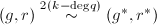. □
下面考虑两个首一的多项式Euclid余式序列：
分别令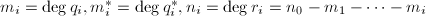,对,定义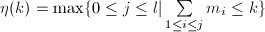,且显然有
下面的定理是快速Euclid算法的基础：
 对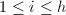成立。
对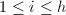成立。
 进行归纳，证明如下命题：
进行归纳，证明如下命题：
由此我们可以得到下面的算法：
输入：首一多项式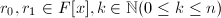,其中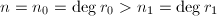n_1=\deg r_1$" class="latex-inline" style="vertical-align: -4px" width="217" height="16">,
输出：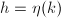以及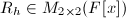.
- 如果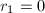或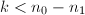,则输出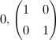,
- 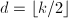,
- 递归调用本算法，输入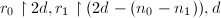,并将结果输出至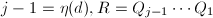,
- 赋值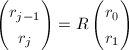,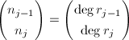,
- 如果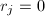或者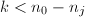则输出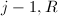,
- 赋值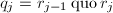,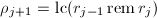,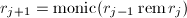,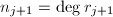,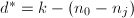,
- 递归调用本算法，输入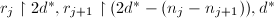,并将结果输出至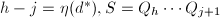,
- 赋值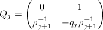,
- 输出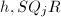.
时应当使恰好只计算一步，这样可以达到最高的效率，即既不多取了不必要的系数进行计算，又不致于系数取得不够。当余式序列的次数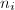下降得缓慢时，相应的就可以取得比较小。实际中无法根据的信息选择，因而有上面的二分递归的策略来选择.
 ,根据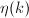的定义我们知道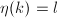,因而算法必将返回
,根据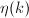的定义我们知道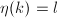,因而算法必将返回后面将会提到上的素数模公因子算法，而为一域，如果再用到本节所提到的快速Euclid算法，则可提高计算效率。
结式与子结式
结式
对于多项式最大公因子问题，结式理论纯粹是一个概念上的工具，并没有用于算法中，但是对于它们的分析对后面的GCD算法理论有重要的作用(见[2]P142).然而结式的计算在某些问题中却十分重要,如符号积分中将要计算的Rothstein-Trager结式(可参见后文有关章节).因此前两小节介绍结式和子结式,第三小节讲它们的计算方法.
令 ，若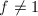,则，令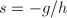,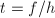则满足。
，若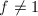,则，令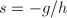,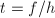则满足。
反过来，设存在这样的 ,
, ，若
，若 ,
, 互素，则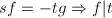，这与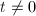且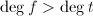\deg t$" class="latex-inline" style="vertical-align: -4px" width="93" height="16">矛盾，因此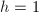.
□
互素，则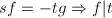，这与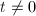且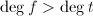\deg t$" class="latex-inline" style="vertical-align: -4px" width="93" height="16">矛盾，因此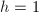.
□
 次多项式
次多项式 ，则Bezout系数
，则Bezout系数 是满射.
是满射.如果记，其中,,则线性映射可在自然基下表示矩阵是Sylvester矩阵：
![$$S=\begin{pmatrix}f_n&\qquad &\qquad &\qquad &g_m& \qquad &\qquad &\qquad &\qquad &\qquad \\
f_{n-1} &f_n & & &g_{m-1} &g_m & & & &\\
\vdots &\vdots &\ddots & &\vdots &\vdots &\ddots & & &\\
\vdots &\vdots & &f_n &g_1 &\vdots & &\ddots & &\\
\vdots &\vdots & &f_{n-1} &g_0 &\vdots & & &\ddots &\\
\vdots &\vdots & &\vdots & &g_0 & & & &g_m\\
f_0 &\vdots & &\vdots & & &\ddots & & &\vdots\\
&f_0 & &\vdots & & & &\ddots & &\vdots\\
& &\ddots &\vdots & & & & &\ddots &\vdots\\
& & &f_0 & & & & & &g_0
\end{pmatrix}.$$](./latex/latex2png-PolyGCD_71421508_.gif)
上面的定理用矩阵语言描述即为:
 那么,为Bezout系数,使得.
那么,为Bezout系数,使得.对于一些特殊情况，当时 是空矩阵，且结式为1。若为0或非常数多项式，则，若是非零常数则.前面定理在这些情形下仍然成立.
是空矩阵，且结式为1。若为0或非常数多项式，则，若是非零常数则.前面定理在这些情形下仍然成立.
![$f,g\in F[x] $](./latex/latex2png-PolyGCD_163394426_-5.gif) ，则下面各条件等价：
，则下面各条件等价：
![$f,g\in R[x]$](./latex/latex2png-PolyGCD_23361946_-5.gif) .则
.则 非平凡当且仅当
非平凡当且仅当 .
.
 为一理想，记
为一理想，记 是UFD，则非常数。
是UFD，则非常数。 .
.
再假设,令 为最小的指标使得,此时将Sylvester矩阵分块，去掉左列和上行，只留下右下的方阵
为最小的指标使得,此时将Sylvester矩阵分块，去掉左列和上行，只留下右下的方阵 ，显然,于是，于是引理得证。
□
，显然,于是，于是引理得证。
□
子结式
设为任一域，,是![$F[x] $](./latex/latex2png-PolyGCD_99776158_-5.gif) 上非零多项式，其的次数
上非零多项式，其的次数 大于等于的次数
大于等于的次数 .如同快速Euclid算法一节所列表格,我们再次将Euclid算法的过程表示如下（各均为首一的）：
.如同快速Euclid算法一节所列表格,我们再次将Euclid算法的过程表示如下（各均为首一的）：
对此有如下的
 使得,于是,且,.最后两个不等式可以用Euclid辗转相除的过程归纳证明.
使得,于是,且,.最后两个不等式可以用Euclid辗转相除的过程归纳证明.
 且.
且.为了将上面的内容翻译成一种代数语言,我们考虑上一节定义的线性映射 在
在 上的限制.然而我们容易知道,该映射的象是在空间中,为了使得其具有在满足某些条件下有成为同构的可能性,我们要使两个空间维数相等.进而我们考虑了如下的线性映射:,其满足
上的限制.然而我们容易知道,该映射的象是在空间中,为了使得其具有在满足某些条件下有成为同构的可能性,我们要使两个空间维数相等.进而我们考虑了如下的线性映射:,其满足
我们有如下的推论:
我们记的矩阵形式为 ,其也取为自然基上的表示,为Sylvester矩阵的子矩阵:
,其也取为自然基上的表示,为Sylvester矩阵的子矩阵:
Euclid算法计算子结式
我们一步步来推出子结式的计算方法.首先我们有如下引理:
 有
有
 为次多项式,于是
由此可以对作初等列变换,并交换一些列的顺序,我们得到
上面的矩阵用分块可表示为如下形式:
因此,
为次多项式,于是
由此可以对作初等列变换,并交换一些列的顺序,我们得到
上面的矩阵用分块可表示为如下形式:
因此, .
□
.
□
进而我们有下面的定理:
 ,且
,且 首一,则:
首一,则:
对于(2),只需化简,有 于是显然可以得到(2)中的递推式. □
取 ,则
,则 即为结式,因此我们得到如下计算结式的方法:
即为结式,因此我们得到如下计算结式的方法:
 其中
其中 .
.
事实上,对于是UFD的情况,上面推论一般也是成立的.例如下面举了一个的例子来说明:
中的模GCD算法
模算法基于的思想是将整数环中的运算化为有限域上的运算,最后通过中国剩余定理算法将有限域中结果还原到整数环中.例如有两个多项式![$f,g\in\mathbb{Z}[x]$](./latex/latex2png-PolyGCD_9938588_-5.gif) ,考虑素数,令,我们要求,那么就可以用有限域中的结果来代替
,考虑素数,令,我们要求,那么就可以用有限域中的结果来代替 ,然而若要
,然而若要 ,我们需要Mignotte界的保证.对于,其成立的条件我们后面也会给出理论上的分析.
,我们需要Mignotte界的保证.对于,其成立的条件我们后面也会给出理论上的分析.
Mignotte界
由线性赋范空间的相关内容易如有如下结论：
首先我们有如下的引理：
 ，并记，则
，并记，则
 证毕.
□
证毕.
□
此由三角函数系的正交归一性显然可以看出.于是 证毕. □
若是 的个复根，则显然有.
的个复根，则显然有.
显然，且.
关于上面定义的，还有下面的：
![$f=\sum\limits_{i=0}^nf_ix^i\in\mathbb{C}[x]$](./latex/latex2png-PolyGCD_55798136_-16.gif) ,，则.
,，则.
 ,,,,则：
,,,,则：
大素数模公因子算法(Big Prime Modular Gcd Algorithm)
如不作特殊说明，本小节中域取代表元.若记的首项系数为 ,则定义其首一多项式为
,则定义其首一多项式为
![$h=\gcd (f,g)\in\mathbb{Z}[x]$](./latex/latex2png-PolyGCD_242923594_-5.gif) .
. ,
, ,
, ,
, 中必有一个素数.
中必有一个素数.
设![$h=\gcd(f,g)\in\mathbb{Z}[x]$](./latex/latex2png-PolyGCD_223180720_-5.gif) ,且0$" class="latex-inline" style="vertical-align: -5px" width="65" height="18">,则是一非零常数，且满足.此由Hadamard不等式
可知,见[2].
,且0$" class="latex-inline" style="vertical-align: -5px" width="65" height="18">,则是一非零常数，且满足.此由Hadamard不等式
可知,见[2].
下面的定理保证了算法4中判定条件的正确性.
事实上，我们对算法4中的条件稍加改变，仍然可行：
于是,,因而. □
算法中是随机从区间 中选取一个素数，这种随机性是否保证我们能较快地得到正确的结果呢？下面的定理作出了回答。
中选取一个素数，这种随机性是否保证我们能较快地得到正确的结果呢？下面的定理作出了回答。
只需证若不同时整除,,且 ,则.
,则.
首先,若,则由首一性知,否则,此时由可得.而存在 使
故仍有.
□
使
故仍有.
□
中Euclid算法，若再用上域上的快速Euclid算法，可提高效率。但是大素数算法中毕竟要用到大素数的模算术，如果能在较小的素数域中运算自然最好。中国剩余定理为我们提供了一种小素数模方法的可能性。
小素数模公因子算法(Small Prime Modular Gcd Algorithm)
下面仅给出小素数模方法的两种实现。其中算法6参考[2],算法7参考[3],两者的思想基本上是一样的.其中在两个算法中任取素数时都加上了限制,此参看[2]生成素数的有关章节.从算法的实现细节上来说,第二个算法比第一个算法略优,其能减少很多不必要的计算.
输入：上本原多项式,,且,,,
输出：.
- 赋值
 ,,
,, ,,
,, - 任取含个不同的素数的集合,且,
- ,
- ,,
- ,,
- 若l$" class="latex-inline" style="vertical-align: -5px" width="46" height="18">则去掉中个元素,只保留个,否则转到第2步,
- 用中国剩余定理计算
 ,
, ,使得
且有
,使得
且有
- 若且
 则继续下一步，否则转到第2步,
则继续下一步，否则转到第2步, - 输出.
的选取使得2B$" class="latex-inline" style="vertical-align: -1px" width="57" height="15">,因而可见中个元素相乘之积必大于.
中本原多项式,,且,,,
输出：.
- ,,,
- 任取素数b$" class="latex-inline" style="vertical-align: -4px" width="38" height="16">(实际上
 即可),且,
即可),且, - ,
- 若则输出1,
 ,,
,,- 若，则执行下一步，否则跳转第12步,
- 再取素数b$" class="latex-inline" style="vertical-align: -4px" width="38" height="16">(or ),且,,令,
- 若则输出1,
- 若,则,,并跳至第6步,
- 若则由中国剩余定理计算
 使得并赋值,,
使得并赋值,, - 转回第6步,
- 若且则继续，否则转回第2步,
- 输出.
多项式组的概率算法
下面引进在一元多项式GCD算法中又一个概率性的算法。对于多项式组来说，我们当然可以一步一步求每两个多项式的最大公因子得到整个多项式组的最大公因子，然而用下面的概率算法虽然得到的是可能解，效率却更高。
 为UFD，
为UFD， ,为有限集且令,次数不超过
,为有限集且令,次数不超过 ,那么
,那么
- 若
 非零，则在中最多有个零点.
非零，则在中最多有个零点. - 若d$" class="latex-inline" style="vertical-align: -1px" width="38" height="13">且在上取值为零，则
 .
.
 情形显然。将写成
情形显然。将写成 的多项式，其中且,由于，则由归纳假设，
的多项式，其中且,由于，则由归纳假设， 在中至多有个零点，于是和至多在中有个零点。并且，至多有个零点，因此零点数目上限可估为：
在中至多有个零点，于是和至多在中有个零点。并且，至多有个零点，因此零点数目上限可估为：- 由1显然得到.
□
若从中随机选取,则有.下面假设我们有一个有限集和一个上随机数发生器，则有下面的：
![$f_1,\ldots,f_n\in F[x]$](./latex/latex2png-PolyGCD_111390183_-5.gif) ，
，用快速Euclid算法替换其中计算，还可提高效率。
 除以
除以 ，这样我们可以假设整个函数组最大公因子为1，设
，这样我们可以假设整个函数组最大公因子为1，设 ，令为上新的未定元，令,再令为的商域(field of fractions)，命,，则是关于的次数不超过的多项式。令
，令为上新的未定元，令,再令为的商域(field of fractions)，命,，则是关于的次数不超过的多项式。令 ,有
,有 ,由引理2,有
设，由于，则它的系数都在关于
,由引理2,有
设，由于，则它的系数都在关于 的分裂域
的分裂域 (the splitting field of over F)中，但是,因此.于是由推知，又由于,则
(the splitting field of over F)中，但是,因此.于是由推知，又由于,则 ，因此为一常数，是中一非零元，再由引理5可得定理中对于概率的估计。
□
，因此为一常数，是中一非零元，再由引理5可得定理中对于概率的估计。
□
实际过程中，可以取为最小次数的多项式，以使错误概率降低，并且在算法结束后检验是否为所求的最大公因子，若不是，则重新选取随机数计算，直至输出正确结果。
参考文献
[1]代数学引论, 高等教育出版社, 北京, 2000.
[2]Modern Computer Algebra, Cambridge University Press, 2002.
[3]计算机代数基础---代数与符号计算的基本原理, 科学出版社, 2005.